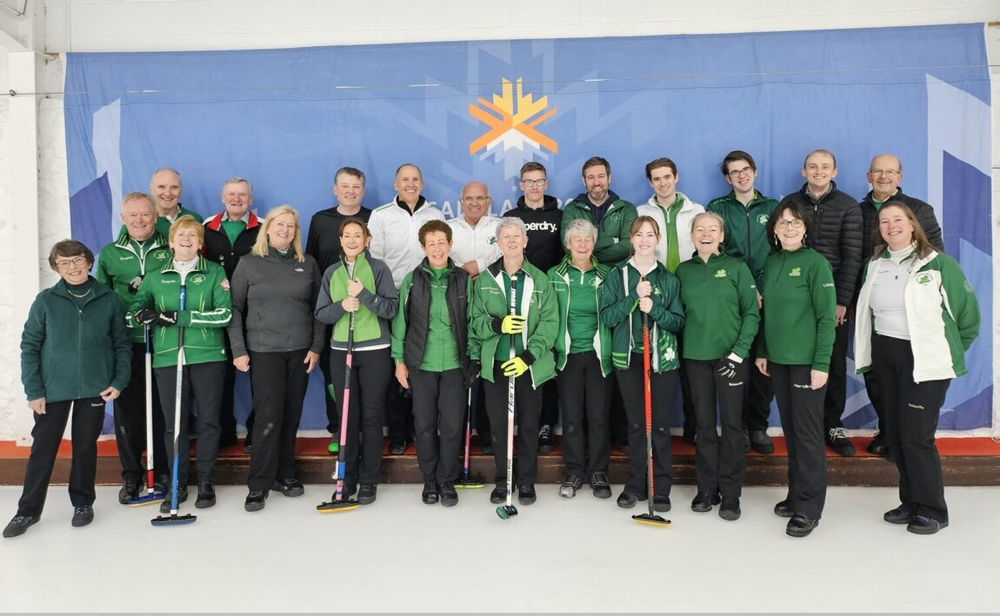
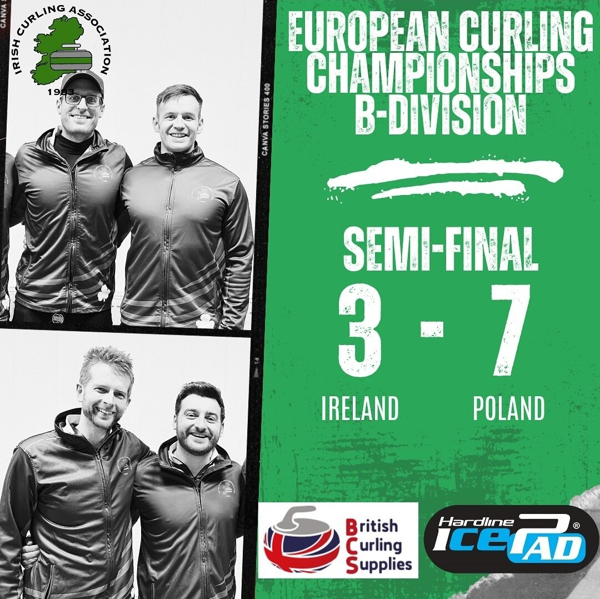

Bonspiels and Fyfe Trophy Update
A round-up from Greenacres, the Fyfe Trophy and the winter bonspiel at Hamilton.
A community representing Ireland on the world stage and working together to bring curling to the island of Ireland.

A round-up from Greenacres, the Fyfe Trophy and the winter bonspiel at Hamilton.

The ICA held on to the Ardrossan–Belfast Trophy with a 9–7 win.

Ireland faced Poland in Östersund, Sweden, with a place in the A division at stake.
Hamilton Ice Rink
North West Castle, Stranraer
We’re working to bring curling back to the island of Ireland, including supporting a proposal for ice in Dublin.